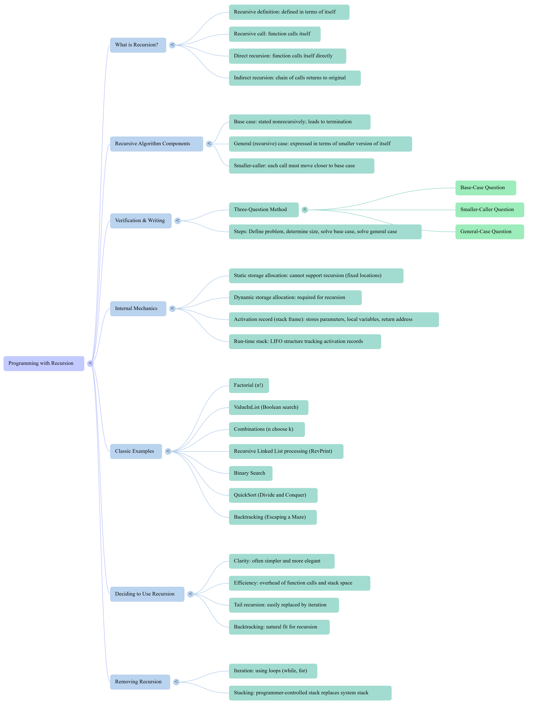

Xinxing Wu
<p class='titlep'> </p> # Recursion <hr> <br> Xinxing Wu
# Outline [<p class="hover-underline-animation">Recursion</p>](#/ch1) [<p class="hover-underline-animation">Summary</p>](#/ch2) [<p class="hover-underline-animation">Application</p>](#/ch3)
## Goal <div id="shadebox-neon" class="shadebox neon"> By the end, you can: - Explain recursion using **<spanBYMix>base case</spanBYMix> + recursive (general) case** - Trace a recursive function and predict output - <spanGREEN>Write simple recursive functions in C++</spanGREEN>: - factorial, sum, power - linear search in an array (boolean recursion) - combinations - reverse-print a linked list - Use a simple checklist to **verify** recursion </div>
<p class="definition-rainbow-title">Recursion</p>
<div class="definition-pro-Y-container"> <div class="definition-pro-Y-title">Repetition (loop) vs recursion</div> <div class="definition-pro-Y-shadebox"> **Loop idea:** repeat <spanRED>until done</spanRED> **Recursion idea:** solve by asking for the answer to a **<spanRED>smaller version</spanRED>** of the <spanRED>same</spanRED> problem <div id="shadebox-glass" class="shadebox glass"> Examples of “repeat”: - Print 1..n - Sum numbers - Search in a list </div> In recursion, the “<spanBYMix>repeat</spanBYMix>” happens by <spanGREEN>calling the function again</spanGREEN>. </div> </div> <div class="definition-container"> <div class="definition-title">Example - Print</div> <div class="definition-shadebox"> <div style="width: 800px;"></div> <div style="font-size: 1.3em; line-height: 1.0;"> ``` #include <iostream> using namespace std; int main() { int n; cout << "Enter n: "; cin >> n; for (int i = 1; i <= n; i++) { cout << i << " "; } return 0; } ``` </div> </div> </div> <div class="definition-container"> <div class="definition-title">Example - Sum</div> <div class="definition-shadebox"> <div style="width: 800px;"></div> <div style="font-size: 1.3em; line-height: 1.0;"> ``` #include <iostream> using namespace std; int main() { int n, sum = 0; cout << "Enter n: "; cin >> n; for (int i = 1; i <= n; i++) { sum = sum + i; } cout << "Sum = " << sum << endl; return 0; } ``` </div> </div> </div> <div class="definition-pro-Y-container"> <div class="definition-pro-Y-title">Smaller and smaller</div> <div class="definition-pro-Y-shadebox"> <spanGREEN>Think</spanGREEN>: **Russian dolls** (big doll contains smaller dolls… until the smallest one) <div id="shadebox"> - Break a <spanGREEN>big</spanGREEN> problem into a smaller one <br> <br> - Keep <spanGREEN>shrinking</spanGREEN> until you hit a case you already know <br> <br> - Then results “<spanGREEN>return back up</spanGREEN>” to solve the original </div> </div> </div> <iframe src="./RecursiveSimulation.html" style="height:600px;width:800px;" title="Iframe Example"></iframe> <div class="definition-pro-Y-container"> <div class="definition-pro-Y-title">Definition: recursive call</div> <div class="definition-pro-Y-shadebox"> A **recursive call** happens when a function calls **itself**. <div style="font-size: 1.6em; line-height: 1.5;"> ``` int f(int n){ return f(n-1); // recursive call } ``` </div> ⚠️ This function is **broken** (<spanRED>no</spanRED> stopping condition). </div> </div> <div class="definition-pro-Y-container"> <div class="definition-pro-Y-title">Two types of recursion</div> <div class="definition-pro-Y-shadebox"> - **<spanGREEN>Direct</spanGREEN> recursion:** a function calls itself directly `A -> A` - **<spanGREEN>Indirect</spanGREEN> recursion:** a chain of calls eventually returns to the start `A -> B -> C -> A` For beginners, we mostly practice **direct recursion** first. </div> </div> <div class="definition-pro-Y-container"> <div class="definition-pro-Y-title">The two MUST-HAVES</div> <div class="definition-pro-Y-shadebox"> Every correct recursive solution needs: - **Base case** A case where the answer is known **<spanGREEN>without recursion</spanGREEN>** (stop condition) - **Progress toward base case** Each call must make the problem **<spanGREEN>smaller</spanGREEN>** so we eventually stop If either is missing → infinite recursion → <spanGREEN>stack</spanGREEN><spanRED>?</spanRED> overflow. </div> </div> <div class="definition-pro-Y-container"> <div class="definition-pro-Y-title">The call stack</div> <div class="definition-pro-Y-shadebox"> When you call a function, C++ stores: - parameter values - local variables - where to return after the call This is called a **stack frame** on the **call stack**. <hr style="border:0;height:6px;border-radius:999px;background:linear-gradient(90deg,#ff3b3b,#ffb13b,#fff23b,#3bff8f,#3bc8ff,#8a3bff,#ff3b3b);background-size:300% 100%;animation:rainbowLine 4s linear infinite;"><style>@keyframes rainbowLine{0%{background-position:0% 50%}100%{background-position:300% 50%}}</style> Recursion means we push **many frames**, then pop them as returns happen. </div> </div> <div class="definition-pro-Y-container"> <div class="definition-pro-Y-title">Classic example: factorial</div> <div class="definition-pro-Y-shadebox"> Factorial definition: <div style="font-size: 1.6em; line-height: 1.5;"> - `0! = 1` - `n! = n * (n-1)!` for `n > 0` </div> So factorial is naturally “defined in terms of itself.” </div> </div> <div class="definition-pro-Y-container"> <div class="definition-pro-Y-title">Factorial in C++</div> <div class="definition-pro-Y-shadebox"> <div style="font-size: 1.6em; line-height: 1.5;"> ```cpp #include <iostream> using namespace std; long long factorial(int n){ if(n == 0) return 1; // base case return n * factorial(n - 1); // recursive (general) case } int main(){ cout << factorial(4) << "\n"; return 0; } ``` </div> </div> </div> <div class="definition-pro-Y-container"> <div class="definition-pro-Y-title">Call chain</div> <div class="definition-pro-Y-shadebox"> We expand until we hit base case: - `factorial(4) = 4 * factorial(3)` - `factorial(3) = 3 * factorial(2)` - `factorial(2) = 2 * factorial(1)` - `factorial(1) = 1 * factorial(0)` - `factorial(0) = 1` ✅ base case </div> </div> <div class="definition-pro-Y-container"> <div class="definition-pro-Y-title">Call chain (cont.)</div> <div class="definition-pro-Y-shadebox"> Then we return back up: - `factorial(1) = 1 * 1 = 1` - `factorial(2) = 2 * 1 = 2` - `factorial(3) = 3 * 2 = 6` - `factorial(4) = 4 * 6 = 24` </div> </div> <div class="definition-pro-Y-container"> <div class="definition-pro-Y-title">Stack view</div> <div class="definition-pro-Y-shadebox"> As calls go down: - factorial(4) - factorial(3) - factorial(2) - factorial(1) - factorial(0) ← base case reached </div> </div> <div class="definition-pro-Y-container"> <div class="definition-pro-Y-title">Stack view (cont.)</div> <div class="definition-pro-Y-shadebox"> As returns go up: - factorial(0) returns 1 - factorial(1) returns 1 - factorial(2) returns 2 - factorial(3) returns 6 - factorial(4) returns 24 </div> </div> <div class="definition-pro-Y-container"> <div class="definition-pro-Y-title">Why the parameter matters</div> <div class="definition-pro-Y-shadebox"> Notice the parameter changes: - Original call: `n` - Recursive call: `n - 1` If you accidentally call `factorial(n)` again, nothing gets smaller → never stops. </div> </div> <div class="definition-pro-Y-container"> <div class="definition-pro-Y-title">Common mistakes</div> <div class="definition-pro-Y-shadebox"> 1) Missing base case ```cpp return n * factorial(n-1); // but no if(...) base case ``` 2) Base case that never happens ```cpp if(n == 1) return 1; // but what if n==0 is allowed? ``` </div> </div> <div class="definition-pro-Y-container"> <div class="definition-pro-Y-title">Common mistakes (cont.)</div> <div class="definition-pro-Y-shadebox"> 3) Not getting smaller ```cpp return n * factorial(n); // wrong ``` </div> </div> <div class="definition-pro-Y-container"> <div class="definition-pro-Y-title">Factorial (iterative) for comparison</div> <div class="definition-pro-Y-shadebox"> <div style="width: 800px;"></div> <div style="font-size: 1.6em; line-height: 1.5;"> ```cpp long long factorial_iter(int n){ long long ans = 1; for(int i = 1; i <= n; i++){ ans *= i; } return ans; } ``` </div> Both work. Recursion is not “always better”—it is a tool. </div> </div> <div class="definition-pro-Y-container"> <div class="definition-pro-Y-title">Recursion vs iteration</div> <div class="definition-pro-Y-shadebox"> **Iteration** - Uses loops - Usually less memory - Often faster (less overhead) <hr style="border:0;height:6px;border-radius:999px;background:linear-gradient(90deg,#ff3b3b,#ffb13b,#fff23b,#3bff8f,#3bc8ff,#8a3bff,#ff3b3b);background-size:300% 100%;animation:rainbowLine 4s linear infinite;"><style>@keyframes rainbowLine{0%{background-position:0% 50%}100%{background-position:300% 50%}}</style> **Recursion** - Can be shorter / clearer for some problems - Matches recursive definitions (factorial, trees, linked lists) - Uses call stack (extra memory) </div> </div> ``` | Aspect | Recursive | Non-recursive (Iterative) | | ---------------- | -------------------------------------------------------------- | ----------------------------------------------------------------- | | Basic idea | A function calls itself | Uses loops like `for` or `while` | | Code readability | Often shorter and cleaner for tree/divide-and-conquer problems | Often easier to follow for simple repetitive tasks | | Ease of writing | Can be easier for naturally recursive problems | Usually easier for basic counting/repetition | | Memory usage | Usually uses more memory because of function call stack | Usually uses less memory | | Speed | May be slower due to repeated function calls | Often faster | | Risk | Can cause stack overflow if recursion is too deep | No recursion stack overflow problem | | Debugging | Sometimes harder to trace because of many function calls | Usually easier to debug step by step | | Best for | Trees, graphs, divide-and-conquer, backtracking | Simple loops, large repetitive tasks, performance-sensitive tasks | ``` ``` | Type | Advantages | Disadvantages | | ------------- | ---------------------------------------------------------------- | ------------------------------------------------------------ | | Recursive | Code can be elegant, short, and close to mathematical definition | More memory usage, slower sometimes, possible stack overflow | | Non-recursive | Usually faster, uses less memory, safer for large input | Code can be longer and less natural for some problems | ``` <div class="definition-pro-Y-container"> <div class="definition-pro-Y-title">Quick practice</div> <div class="definition-pro-Y-shadebox"> Predict: - factorial(0) = ? - factorial(1) = ? - factorial(5) = ? <button type="button" class="reveal-btn" data-answer="answer-q0">Show Answer</button> <div id="answer-q0" class="answer-box"> <b>Answer:</b>1, 1, 120 </div> </div> </div> <div class="definition-pro-Y-container"> <div class="definition-pro-Y-title">Examples</div> <div class="definition-pro-Y-shadebox"> Rewrite Print and Sum ? </div> </div> <div class="definition-pro-Y-container"> <div class="definition-pro-Y-title">Example - Print</div> <div class="definition-pro-Y-shadebox"> <div style="width: 800px;"></div> <div style="font-size: 1.6em; line-height: 1.5;"> ``` #include <iostream> using namespace std; void printNumbers(int n) { if (n == 0) { return; } printNumbers(n - 1); cout << n << " "; } int main() { int n; cout << "Enter n: "; cin >> n; printNumbers(n); return 0; } ``` </div> </div> </div> <div class="definition-pro-Y-container"> <div class="definition-pro-Y-title">Example - Sum</div> <div class="definition-pro-Y-shadebox"> <div style="width: 800px;"></div> <div style="font-size: 1.6em; line-height: 1.5;"> ``` #include <iostream> using namespace std; int sumNumbers(int n) { if (n == 0) { return 0; } return n + sumNumbers(n - 1); } int main() { int n; cout << "Enter n: "; cin >> n; cout << "Sum = " << sumNumbers(n) << endl; return 0; } ``` </div> </div> </div> <div class="definition-pro-Y-container"> <div class="definition-pro-Y-title">Recursion: sum 1..n</div> <div class="definition-pro-Y-shadebox"> <div style="width: 800px;"></div> Math: - sum(0) = 0 - sum(n) = n + sum(n-1) C++: <div style="font-size: 1.6em; line-height: 1.5;"> ```cpp int sumTo(int n){ if(n == 0) return 0; // base return n + sumTo(n - 1); // smaller } ``` </div> </div> </div> <div class="definition-pro-Y-container"> <div class="definition-pro-Y-title">power(x, n)</div> <div class="definition-pro-Y-shadebox"> <div style="width: 800px;"></div> Compute \(x^n\) for nonnegative n - power(x, 0) = 1 - power(x, n) = x * power(x, n-1) <div style="font-size: 1.6em; line-height: 1.5;"> ```cpp long long power(long long x, int n){ if(n == 0) return 1; return x * power(x, n - 1); } ``` </div> </div> </div> <div class="definition-pro-Y-container"> <div class="definition-pro-Y-title">Printing: printDown and printUp</div> <div class="definition-pro-Y-shadebox"> <div style="width: 800px;"></div> <div style="font-size: 1.6em; line-height: 1.5;"> ```cpp void printDown(int n){ if(n == 0) return; cout << n << " "; printDown(n-1); } ``` ```cpp void printUp(int n){ if(n == 0) return; printUp(n-1); cout << n << " "; } ``` </div> </div> </div> <div class="definition-pro-Y-container"> <div class="definition-pro-Y-title">Printing (cont.)</div> <div class="definition-pro-Y-shadebox"> Try n=5: - printDown → `5 4 3 2 1` - printUp → `1 2 3 4 5` </div> </div> <div class="definition-pro-Y-container"> <div class="definition-pro-Y-title">WHERE you print matters</div> <div class="definition-pro-Y-shadebox"> - Print **before** the recursive call → output while “going down” - Print **after** the recursive call → output while “coming back up” This is the secret behind reverse printing. </div> </div> <div class="definition-pro-Y-container"> <div class="definition-pro-Y-title">Building a recursive function</div> <div class="definition-pro-Y-shadebox"> For beginners, always write these 4 parts: - **What is the problem?** (clear statement) - **What is the size?** (what gets smaller each call?) - **Base case(s)** (size is smallest → answer immediately) - **General (recursive) case** (solve using a smaller call) Write this as comments first, then code. </div> </div> <div class="definition-pro-Y-container"> <div class="definition-pro-Y-title">Example recipe: sum 1..n</div> <div class="definition-pro-Y-shadebox"> - Problem: sum numbers 1..n - Size: n - Base case: n==0 - General: n + sumTo(n-1) That’s it. </div> </div> <div class="definition-pro-Y-container"> <div class="definition-pro-Y-title">Need extra parameters</div> <div class="definition-pro-Y-shadebox"> Some problems need a “moving pointer” / index. Example: search a list → we track where we are. </div> </div> <div class="definition-pro-Y-container"> <div class="definition-pro-Y-title">Why verify?</div> <div class="definition-pro-Y-shadebox"> A recursive function can “look” correct but still: - never stop - skip the right answer - go out of bounds We want a simple checklist. </div> </div> <div class="definition-pro-Y-container"> <div class="definition-pro-Y-title">Three-Question Method</div> <div class="definition-pro-Y-shadebox"> To verify a recursive routine, answer **yes** to all: - **Base-case question:** Is there a non-recursive way out, and is it correct? - **Smaller-caller question:** Does every recursive call move toward the base case? - **General-case question:** Assuming the recursive call works, does the whole function work? </div> </div> <div class="definition-pro-Y-container"> <div class="definition-pro-Y-title">Apply it to factorial</div> <div class="definition-pro-Y-shadebox"> - Base case: n==0 returns 1 ✅ correct - Smaller call: factorial(n-1) makes n smaller ✅ - General: if factorial(n-1) is correct, n * that is n! ✅ So factorial is verified. </div> </div> <div class="definition-shakeflash-container"> <div class="definition-shakeflash-title">“Assuming it works” is powerful</div> <div class="definition-shakeflash-shadebox"> The third question is like induction: - If the smaller version is correct, - Then the bigger version is correct. This is why recursion can be proven correct. </div> </div> <div class="definition-pro-Y-container"> <div class="definition-pro-Y-title">Is value in the list?</div> <div class="definition-pro-Y-shadebox"> We want a function that returns: - **true** if value exists - **false** otherwise A beginner-friendly approach: - search starting from some index - shrink the remaining part each call </div> </div> <div class="definition-pro-Y-container"> <div class="definition-pro-Y-title">array + length</div> <div class="definition-pro-Y-shadebox"> Let’s store a list and search: ```cpp bool valueInList(const int a[], int length, int value, int startIndex) { // returns true if value appears in a[startIndex..length-1] // otherwise false } ``` We shrink the problem by increasing startIndex. </div> </div> <div class="definition-pro-Y-container"> <div class="definition-pro-Y-title">Base cases (search)</div> <div class="definition-pro-Y-shadebox"> Two common base cases: 1) Found it now: - if a[startIndex] == value → true 2) We ran out of list: - if startIndex == length → false (meaning: there are no more elements to check) </div> </div> <div class="definition-pro-Y-container"> <div class="definition-pro-Y-title">Recursive (general) case</div> <div class="definition-pro-Y-shadebox"> If not found yet, search the rest: - return valueInList(a, length, value, startIndex + 1) That makes the remaining list smaller. </div> </div> <div class="definition-pro-Y-container"> <div class="definition-pro-Y-title">valueInList (recursive linear search)</div> <div class="definition-pro-Y-shadebox"> ```cpp #include <iostream> using namespace std; bool valueInList(const int a[], int length, int value, int startIndex){ if(startIndex == length) return false; // base: no more items if(a[startIndex] == value) return true; // base: found it return valueInList(a, length, value, startIndex + 1); // smaller } int main(){ int a[5] = {7, 2, 9, 4, 9}; cout << valueInList(a, 5, 4, 0) << "\n"; // 1 (true) cout << valueInList(a, 5, 8, 0) << "\n"; // 0 (false) } ``` </div> </div> <div class="definition-pro-Y-container"> <div class="definition-pro-Y-title">Trace example - search</div> <div class="definition-pro-Y-shadebox"> Array: [7,2,9,4,9], value=4 Calls: - startIndex=0 → a[0]=7 ≠ 4 → call startIndex=1 - startIndex=1 → a[1]=2 ≠ 4 → call startIndex=2 - startIndex=2 → a[2]=9 ≠ 4 → call startIndex=3 - startIndex=3 → a[3]=4 == 4 → return true </div> </div> <div class="definition-pro-Y-container"> <div class="definition-pro-Y-title">Trace example - search (cont.)</div> <div class="definition-pro-Y-shadebox"> <div style="width: 800px;"></div> Returns: - startIndex=3 returns true - startIndex=2 returns true - startIndex=1 returns true - startIndex=0 returns true </div> </div> <div class="definition-pro-Y-container"> <div class="definition-pro-Y-title">Verify valueInList using 3 questions</div> <div class="definition-pro-Y-shadebox"> - Base-case: - when startIndex==length → return false ✅ - when found → return true ✅ - Smaller call: startIndex increases → eventually hits length ✅ - General case: if the rest of the list is searched correctly, returning that result is correct ✅ </div> </div> <div class="definition-pro-Y-container"> <div class="definition-pro-Y-title">Complexity</div> <div class="definition-pro-Y-shadebox"> For a list of n items: - worst case checks every item → about n comparisons So time is about **O(n)**. Recursion adds call overhead + stack frames, but still O(n) comparisons. </div> </div> > Using recursion to simplify solutions <div class="definition-pro-Y-container"> <div class="definition-pro-Y-title">Combinations problem (choose)</div> <div class="definition-pro-Y-shadebox"> “How many ways to choose *members* items from a group of size *group*?” This is often written \(C(group, members)\). Recursive definition idea: - break the problem into smaller choose problems </div> </div> <div class="definition-pro-Y-container"> <div class="definition-pro-Y-title">Base cases for combinations</div> <div class="definition-pro-Y-shadebox"> <div style="width: 800px;"></div> Two standard base cases: - If members == 1 → return group (choose 1 from group: group ways) - If members == group → return 1 (choose all: only 1 way) </div> </div> <div class="definition-pro-Y-container"> <div class="definition-pro-Y-title">General case</div> <div class="definition-pro-Y-shadebox"> One common recursion: - C(group, members) = C(group-1, members-1) + C(group-1, members) Meaning: - either you **take** a particular item - or you **don’t take** it </div> </div> <div class="definition-pro-Y-container"> <div class="definition-pro-Y-title">combinations (simple recursion)</div> <div class="definition-pro-Y-shadebox"> <div style="width: 800px;"></div> ```cpp long long combinations(int group, int members){ if(members == 1) return group; // base case 1 if(members == group) return 1; // base case 2 return combinations(group-1, members-1) + combinations(group-1, members); } ``` Try: - combinations(4,3) = 4 - combinations(5,2) = 10 </div> </div> <div class="definition-pro-Y-container"> <div class="definition-pro-Y-title">Small call tree (combinations(4,3))</div> <div class="definition-pro-Y-shadebox"> <div style="width: 800px;"></div> combinations(4,3) - = combinations(3,2) + combinations(3,3) - combinations(3,3) hits base → 1 - combinations(3,2) - = combinations(2,1) + combinations(2,2) - combinations(2,1) hits base → 2 - combinations(2,2) hits base → 1 So combinations(3,2)=3, then 3+1=4 </div> </div> <div class="definition-pro-Y-container"> <div class="definition-pro-Y-title">Linked list idea</div> <div class="definition-pro-Y-shadebox"> <div style="width: 800px;"></div> A node has: - data (info) - pointer to next node ```cpp struct Node{ int info; Node* next; }; ``` </div> </div> <div class="definition-pro-Y-container"> <div class="definition-pro-Y-title">print list in reverse order</div> <div class="definition-pro-Y-shadebox"> Example list: A → B → C → D → nullptr Goal output: D C B A Recursion helps because: - “print rest in reverse” - then print current </div> </div> <div class="definition-pro-Y-container"> <div class="definition-pro-Y-title">Recursive reverse print (concept)</div> <div class="definition-pro-Y-shadebox"> <div style="width: 800px;"></div> To reverse-print from node p: 1) reverse-print the rest (p->next) 2) print p->info Base case: - p == nullptr (end) </div> </div> <div class="definition-pro-Y-container"> <div class="definition-pro-Y-title">reverse print a linked list</div> <div class="definition-pro-Y-shadebox"> ```cpp #include <iostream> using namespace std; struct Node{ int info; Node* next; }; void revPrint(Node* p){ if(p == nullptr) return; // base case revPrint(p->next); // smaller (rest of list) cout << p->info << " "; // print on the way back up } ``` </div> </div> <div class="definition-pro-Y-container"> <div class="definition-pro-Y-title">build a tiny list</div> <div class="definition-pro-Y-shadebox"> ```cpp int main(){ Node a{1, nullptr}; Node b{2, nullptr}; Node c{3, nullptr}; a.next = &b; b.next = &c; revPrint(&a); // prints: 3 2 1 } ``` </div> </div> <div class="definition-pro-Y-container"> <div class="definition-pro-Y-title">Why reverse print works</div> <div class="definition-pro-Y-shadebox"> Because printing happens **after** the recursive call. - Calls go down to the end - Then prints happen while returning back up - That naturally reverses the order </div> </div> <div class="definition-pro-Y-container"> <div class="definition-pro-Y-title">Practice</div> <div class="definition-pro-Y-shadebox"> Practice 1: spot the missing base case - What’s wrong? ```cpp int sumTo(int n){ return n + sumTo(n-1); } ``` Fix it: add a base case. </div> </div> <div class="definition-pro-Y-container"> <div class="definition-pro-Y-title">Practice</div> <div class="definition-pro-Y-shadebox"> Practice 2: trace output - Predict the output: ```cpp void mystery(int n){ if(n == 0) return; cout << n << " "; mystery(n-1); cout << n << " "; } ``` Try n=3. </div> </div> <div class="definition-pro-Y-container"> <div class="definition-pro-Y-title">Practice</div> <div class="definition-pro-Y-shadebox"> Practice 2 answer (after students try) - Call order: - prints while going down: 3 2 1 - prints while coming back up: 1 2 3 Output: `3 2 1 1 2 3` </div> </div> <iframe src="./Hanoi_Tower.html" style="height:600px;width:800px;" title="Iframe Example"></iframe> <div class="definition-container"> <div class="definition-title">Soultuon</div> <div class="definition-shadebox"> Create a recursive function that takes the four arguments: - <spanBYMix>Number</spanBYMix> of Disks (n) - <spanBYMix>Source</spanBYMix> Rod (s_rod) - <spanBYMix>Destination</spanBYMix> Rod (d_rod) - <spanBYMix>Auxiliary</spanBYMix> Rod (a_rod) </div> </div> <div class="question-container"> <div class="question-title">Soultuon</div> <div class="question-shadebox"> - If there's only one disk: - Print the move for the single disk. - Return from the function. <hr style="border:0;height:6px;border-radius:999px;background:linear-gradient(90deg,#ff3b3b,#ffb13b,#fff23b,#3bff8f,#3bc8ff,#8a3bff,#ff3b3b);background-size:300% 100%;animation:rainbowLine 4s linear infinite;"><style>@keyframes rainbowLine{0%{background-position:0% 50%}100%{background-position:300% 50%}}</style> - If there are more than one disks: - Call the <spanGREEN>towerOfHanoi</spanGREEN> function to move <spanRED>n-1</spanRED> disks from the <spanBYMix>source</spanBYMix> rod to the <spanBYMix>auxiliary</spanBYMix> rod using the <spanBYMix>destination</spanBYMix> rod. <hr> - Print the move for the <spanRED>n-th</spanRED> disk from the <spanBYMix>source</spanBYMix> rod to the <spanBYMix>destination</spanBYMix> rod. <hr> - Call the <spanGREEN>towerOfHanoi</spanGREEN> function to move n-1 disks from the auxiliary rod to the <spanBYMix>destination</spanBYMix> rod using the <spanBYMix>source</spanBYMix> rod. </div> </div> <div class="question-container"> <div class="question-title">Soultuon</div> <div class="question-shadebox"> <div style="width: 800px;"></div> <div style="font-size: 1.6em; line-height: 1.5;"> ``` #include <iostream> using namespace std; void towerOfHanoi(int n, char s_rod, char d_rod, char a_rod) { if (n == 1) { cout << "Move disk 1 from rod " << s_rod << " to rod " << d_rod << endl; return; } towerOfHanoi(n - 1, s_rod, a_rod, d_rod); cout << "Move disk " << n << " from rod " << s_rod << " to rod " << d_rod << endl; towerOfHanoi(n - 1, a_rod, d_rod, s_rod); } int main() { int n = 3; towerOfHanoi(n, 'A', 'C', 'B'); return 0; } ``` </div> </div> </div> <div class="question-container"> <div class="question-title">Soultuon</div> <div class="question-shadebox"> <div style="width: 800px;"></div> ``` // C++ program to illustrate how to implement the tower of // hanoi algorithm #include <iostream> using namespace std; // Create a recursive function for Tower of Hanoi void towerOfHanoi(int n, char s_rod, char d_rod, char a_rod) { // If there's only one disk if (n == 1) { // Print the move for the single disk cout << "Move disk 1 from rod " << s_rod << " to rod " << d_rod << endl; return; } // If there are more than one disks // Call the towerOfHanoi function to move n-1 disks from // the source rod to the auxiliary rod using the // destination rod towerOfHanoi(n - 1, s_rod, a_rod, d_rod); // Print the move for the nth disk from the source rod // to the destination rod cout << "Move disk " << n << " from rod " << s_rod << " to rod " << d_rod << endl; // Call the towerOfHanoi function to move n-1 disks from // the auxiliary rod to the destination rod using the // source rod towerOfHanoi(n - 1, a_rod, d_rod, s_rod); } int main() { // Number of disks int n = 3; // Call the Tower of Hanoi function towerOfHanoi(n, 'A', 'C', 'B'); return 0; } ``` </div> </div> <div class="question-container"> <div class="question-title">Soultuon</div> <div class="question-shadebox"> <div style="width: 800px;"></div> - Time Complexity: $\mathcal{O}(2^n)$ - Space Complexity: $\mathcal{O}(n)$ </div> </div>
<p class="definition-rainbow-title">Summary</p>
<iframe src="./Discussion7.html" style="width:100%;max-width:1200px;height:620px;border:0;border-radius:14px;overflow:hidden;display:block;margin:30px auto;" allow="autoplay" sandbox="allow-scripts allow-same-origin"> </iframe> <iframe style="width:100%;max-width:1200px;height:700px;border:0;border-radius:16px;overflow:hidden;display:block;margin:0 auto;box-shadow:0 18px 50px rgba(0,0,0,.35);background:rgba(0,0,0,.06);" src="./files/10_Recursion.pdf#page=1&zoom=page-width" allow="fullscreen" loading="lazy"> </iframe> <iframe style="width:100%;max-width:1200px;height:700px;border:0;border-radius:12px;overflow:hidden;display:block;margin:0 auto;" srcdoc='<!doctype html> <html> <head> <meta charset="utf-8" /> <meta name="viewport" content="width=device-width,initial-scale=1" /> <style> body{margin:0;padding:14px;font-family:Arial,Helvetica,sans-serif;background:#32a881;} .wrap{width:100%;max-width:1200px;margin:0 auto;} .bar{display:flex;gap:10px;align-items:center;margin-bottom:10px;} button{padding:8px 12px;border:1px solid #ccc;border-radius:8px;background:#fff;cursor:pointer;} .label{margin-left:auto;font-size:14px;color:#333;} .box{width:100%;height:650px;border:1px solid rgba(0,0,0,.18);border-radius:12px;overflow:auto;background:#fafafa;box-shadow:0 10px 25px rgba(0,0,0,.10);} img{display:block;width:auto;height:700px;max-width:none;max-height:none;transform-origin:top left;transform:scale(1);} </style> </head> <body> <div class="wrap" id="root"> <div class="bar"> <button id="zin" type="button">Zoom +</button> <button id="zout" type="button">Zoom -</button> <button id="zreset" type="button">Reset (100%)</button> <span class="label" id="zl">100%</span> </div> <div class="box" id="box"> <p></p> </div> </div> <script> (function(){ var zoom=1, step=0.2, min=0.2, max=6; var img=document.getElementById("img"); var label=document.getElementById("zl"); var box=document.getElementById("box"); function apply(){ img.style.transform="scale("+zoom+")"; label.textContent=Math.round(zoom*100)+"%"; } document.getElementById("zin").addEventListener("click", function(){ zoom=Math.min(max, zoom+step); apply(); }); document.getElementById("zout").addEventListener("click", function(){ zoom=Math.max(min, zoom-step); apply(); }); document.getElementById("zreset").addEventListener("click", function(){ zoom=1; apply(); }); box.addEventListener("wheel", function(e){ if(!e.ctrlKey) return; e.preventDefault(); zoom += (e.deltaY < 0) ? step : -step; zoom = Math.max(min, Math.min(max, zoom)); apply(); }, {passive:false}); apply(); })(); </script> </body> </html>'> </iframe> ## Review <video controls> <source src="./files/Advanced_Linked_Lists.mp4" type="video/mp4"> </video>
<p class="definition-rainbow-title">Application</p>
<div class="definition-pro-Y-container"> <div class="definition-pro-Y-title">Recursion Toolkit</div> <div class="definition-pro-Y-shadebox"> Create a single C++ file and implement: - `int sumTo(int n)` - `bool valueInList(...)` (array search) - `long long combinations(int group, int members)` - `void revPrint(Node* p)` Rules: - Each function must have **base case(s)** - Each recursive call must make the problem smaller </div> </div> <div class="definition-pro-Y-container"> <div class="definition-pro-Y-title">Starter template</div> <div class="definition-pro-Y-shadebox"> ```cpp #include <iostream> using namespace std; int sumTo(int n){ // TODO } bool valueInList(const int a[], int length, int value, int startIndex){ // TODO } long long combinations(int group, int members){ // TODO } struct Node{ int info; Node* next; }; void revPrint(Node* p){ // TODO } int main(){ cout << "sumTo(5) = " << sumTo(5) << "\n"; int a[5] = {7,2,9,4,9}; cout << "search 4 = " << valueInList(a,5,4,0) << "\n"; cout << "search 8 = " << valueInList(a,5,8,0) << "\n"; cout << "C(5,2) = " << combinations(5,2) << "\n"; Node x{1,nullptr}, y{2,nullptr}, z{3,nullptr}; x.next = &y; y.next = &z; cout << "revPrint: "; revPrint(&x); cout << "\n"; } ``` </div> </div> <div id="shadebox"> ### Example code - Solution <hr style="border: none; border-top: 1.5px solid cyan;"> ```cpp int sumTo(int n){ if(n == 0) return 0; return n + sumTo(n-1); } bool valueInList(const int a[], int length, int value, int startIndex){ if(startIndex == length) return false; if(a[startIndex] == value) return true; return valueInList(a, length, value, startIndex + 1); } long long combinations(int group, int members){ if(members == 1) return group; if(members == group) return 1; return combinations(group-1, members-1) + combinations(group-1, members); } void revPrint(Node* p){ if(p == nullptr) return; revPrint(p->next); cout << p->info << " "; } ``` </div> <div class="definition-pro-Y-container"> <div class="definition-pro-Y-title">Task</div> <div class="definition-pro-Y-shadebox"> Write a recursive function: - `int countDigits(int n)` Examples: - countDigits(0)=1 - countDigits(7)=1 - countDigits(12345)=5 Hint: - base case: n < 10 - general: 1 + countDigits(n/10) </div> </div> <div id="shadebox"> ### Example code <hr style="border: none; border-top: 1.5px solid cyan;"> ``` int countDigits(int n) { // Special case: 0 has 1 digit if (n == 0) return 1; // Base case: any 1-digit number if (n < 10) return 1; // Recursive case: strip one digit return 1 + countDigits(n / 10); } ``` </div> <div class="question-container"> <div class="question-title">Note</div> <div class="question-shadebox"> countDigits(0) -> 1 countDigits(7) -> 1 countDigits(12345) -> 5 </div> </div> <div class="question-container"> <div class="question-title">Note</div> <div class="question-shadebox"> ``` int countDigits(int n) { // Special case: 0 has 1 digit if (n == 0) return 1; // If negative, make it positive if (n < 0) { n = -n; } // Base case: any 1-digit number if (n < 10) return 1; // Recursive case: strip one digit return 1 + countDigits(n / 10); } ``` </div> </div>